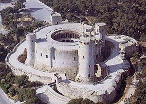
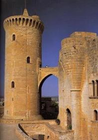
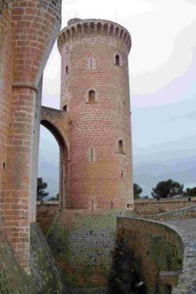
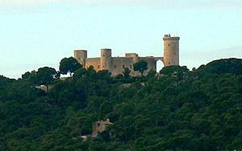
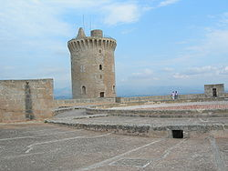
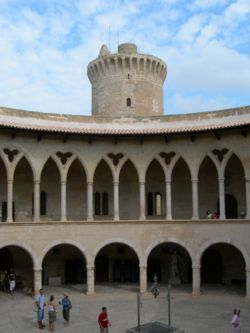

|
|
|||||
|
|
||||||
|
Castell de Bellver. |
||||||
| El castillo de Bellver es un castillo de estilo gótico mallorquin situado a unos tres kilómetros de la ciudad antigua de Palma de Mallorca, en la isla de Mallorca, España. Fue construido a principios del siglo XIV por orden del rey Jaime II de Mallorca. Se encuentra sobre un monte de 112 metros sobre el nivel del mar, en una zona rodeada de bosque, desde donde se puede contemplar la ciudad, el puerto, la sierra de Tramontana y Pla de Mallorca; de hecho, su nombre viene del catalán antiguo bell veer, que significa «bella vista». Una de sus peculiaridades es que se trata de uno de los pocos castillos de toda Europa de planta circular, siendo el más antiguo de estos. Actualmente pertecene al Ajuntament de Palma y en él se encuentra el Museo de Historia de la ciudad de Palma, por lo que está abierto al público. | ||||||
|  | El diseño de planta circular con torres también circulares adosadas parece provenir del conjunto superior del Herodión (en Cisjordania), también circular y con una gran torre maestra y tres torres menores. Las torres menores están adosadas y la del homenaje está atravesada por un muro por lo que está adosada. Este edificio tampoco tiene un pórtico en el patio. A su vez, el castillo de Bellver inspiró el de Michelstetten que aunque no tiene torres sí cuenta con una galería superpuesta en el patio con arcos muy rebajados y columnas de planta circular. | |||||
|  | ||||||
| Una vez construido el castillo de Bellver, debido a la introducción de la artillería, desaparecieron las almenas de la terraza superior y de la barbacana, y algo más tarde, de todas las torres. Se construyeron troneras en el revellín y la barbacana, cambiando el punto de acceso al revellín. En 1713, durante la guerra de Sucesión, se construyó un estrado cubierto actualmente en mal estado de conservación, invadido por pinar o ajardinada en la entrada, a pesar de su valor histórico. | ||||||
|  | ||||||
| La parte principal de la
fortificación la construyó el arquitecto Pere Salvà, que también trabajó
en el palacio de la Almudaina, con otros maestros de obras entre los
años 1300 y 1311 para Jaime II. Para su construcción, buena parte de la
piedra se extrajo de una cueva-cantera del mismo monte, debajo de la
fortificación, cosa que ha provocado grietas en el edificio. Cuando se
necesitaba piedra más dura, se traía de Portals Vells y de Santanyí. El castillo desempeñó al principio las funciones residenciales para las cuales fue construido, en tiempo de los reyes Jaime II, Sancho y Jaime III de Mallorca. También lo habitó el rey Juan I de Aragón, huyendo de la peste que atacaba al continente (1394). En el siglo XVII fue residencia esporádica de algunos virreyes. Como fortificación sufrió también diferentes asedios, el primero en el año 1343, durante la campaña de reincorporación del reino de Mallorca a la Corona de Aragón, por Pedro el Ceremonioso; el siguiente, en el año 1391, durante la revuelta contra el Call, y el último, el año 1521, con el único asalto de su historia, durante la Segona Germania. |
||||||
| El castillo estaba
gobernado por un castellano. En el año 1408, el rey Martín el humano
concedió la señoría de Bellver a la cartuja de Valldemosa. En el año
1459, llegó a Mallorca el príncipe de Viana para tomar posesión de los
castillos de la isla, de acuerdo con el pacto con su padre, Juan II que
le hacía señor de Mallorca, aunque finalmente el rey no le concedió la
señoría ni le cedió el castillo de Bellver. Como recinto cerrado, desde el siglo XIV se hizo servir como prisión, primero de la reina Violante y de los príncipes Jaime e Isabel y de otros partidarios del rey Jaime III, después de su muerte en la batalla de Lluchmayor (1349). Durante la guerra de Ocupación, de botifleros, y, después de la victoria franco española, de austracistas. En el siglo XIX, durante la guerra de la Independencia Española, de presos de la batalla de Bailén, y, después, de presos políticos, el primero y el más famoso de los cuales fue el ministro Gaspar Melchor de Jovellanos (1802-1808), que hizo la primera descripción del castillo y encargó los primeros planos y dibujos, como también hizo una descripción botánica y geológica del pinar circumdante, fundando con ellas el movimiento conservacionista del patrimonio. El físico francés François Aragó, que participaba en la medición del meridiano de París, se refugió, acusado de espionaje por la población. Le siguieron el general antiabsolutista Luís Lacy, que fue fusilado (1817), los liberales Esteve Bonet i Perelló, Joan Coll Crespí y otros (1824) y Miquel Bibiloni i Corró (1867), republicanos catalanistas como Valentí Almirall (1869), el restaurador de la monarquía borbónica en España, con Alfonso XII, Arsenio Martínez Campos (1874) y diferentes carlinos. En el siglo XX, se encerró a 800 presos políticos republicanos, después de la insurrección de 1936, los cuales fueron obligados a construir la actual carretera de acceso al castillo. Entre estos presos se encontraba Alexandre Jaume, que como diputado había conseguido la cesión del castillo a la ciudad, y Emili Darder, alcalde en el momento de la cesión, ambos fusilados después. |
||||||
|  | Al ser construido para
albergar la corte real de Jaime II de Mallorca, su estructura combina
las necesidades palaciegas con elementos defensivos. Lo más destacado de su estructura es precisamente su forma circular, única en España. Es circular tanto su muralla como su patio interior. Las tres torres adosadas a la muralla son también circulares, así como la torre del homenaje. La torre de homenaje, con estructura circular, está separada del resto del edificio. |
|||||
| Rodeando el castillo y la torre del
homenaje hay un foso. Cabe destacar el patio circular. En el centro del mismo hay un brocal de cisterna que indica que en el subsuelo hay un gran aljibe para almacenar agua. El palacio está estructurado en dos plantas alrededor del patio central. Todas las dependencias dan al patio central mediante una galería de arcos góticos. Actualmente el castillo es visitable y en él se alberga el museo de la ciudad, con una exposición de la historia de Palma de Mallorca desde los primeros pobladores hasta la Edad Media |
 | |||||
|  | En 1931 la Segunda
República Española cedió el castillo a la ciudad de Palma, junto con el
bosque que lo rodea. En 1932 se convirtió en museo, siendo renovado en
1976 para convertirse en el Museo de Historia de Palma de Mallorca,
conteniendo una colección de esculturas clásicas del cardenal Despuig.
Gracias a la carretera y el aparcamiento que se construyeron,
actualmente el castillo recibe un gran número de visitantes. El patio es sede de gran variedad de actos protocolarios, conciertos y actos culturales. Su situación y visibilidad desde el mar y desde cualquier punto de la ciudad lo han convertido en uno de los símbolos de la ciudad. En el recinto del bosque de Bellver se encuentran los establos de la policía montada municipal. Además hay que destacar la capilla dedicada a San Alonso Rodríguez construida entre 1879 y 1885. Desde el barrio de El Terreno se puede llegar al castillo por un camino empedrado que se construyó para subir artillería al castillo. Se conoce como calle del Polvorín. |
|||||
| El segundo domingo de Pascua, día del Angel Custodio, los palmesanos se juntan en el bosque de Bellver para la celebración del Diumenge de l'Àngel. | ||||||